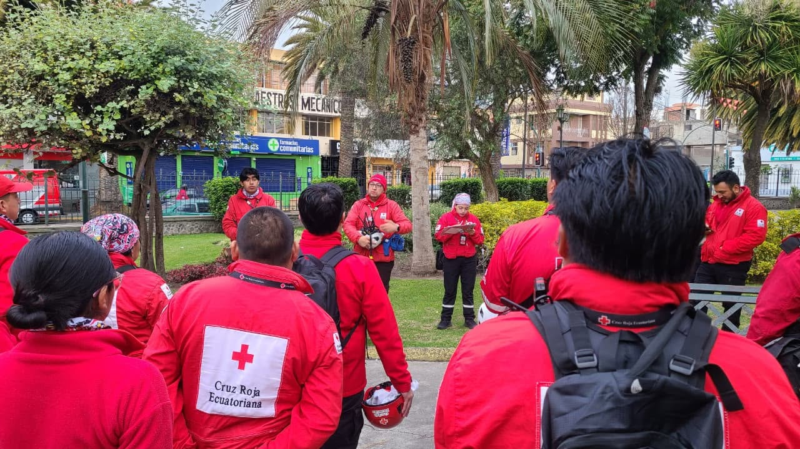

Cruz Roja Cotopaxi
Cada vez, más cerca de ti
Más de 100 años protegiendo la vida y la dignidad de las comunidades de Cotopaxi.
Cruz Roja Cotopaxi
Más de 100 años protegiendo la vida y la dignidad de las comunidades de Cotopaxi.
Nuestro Equipo
Mujeres y hombres voluntarios que responden en emergencias, salud y trabajo comunitario.
Dona sangre
Solo el 5% de los posibles donantes dona. Sé parte de ese grupo que sostiene a toda la población.
Gestión de riesgos
Planes de preparación, mapas de riesgo comunitarios y respuesta rápida ante desastres.
Salud y desarrollo comunitario
Promoción de la salud, apoyo psicosocial y atención de emergencias médicas.
Voluntariado y juventud
Educación entre pares y participación comunitaria para construir una sociedad más justa.

CampañasCon éxito culminamos nuestro Operativo Mama Negra 2026, reafirmando nuestro compromiso de velar por la seguridad, salud y bienestar de la ciudadanía durante una de las festividades de Latacunga. Expresamos nuestro agradecimientos a las juntas de Cruz Roja Pichincha, Tungurahua y Chimborazo, por sumar esfuerzos, conocimientos y vocación de servicio para hacer posible este importante despliegue humanitario.
Leer más